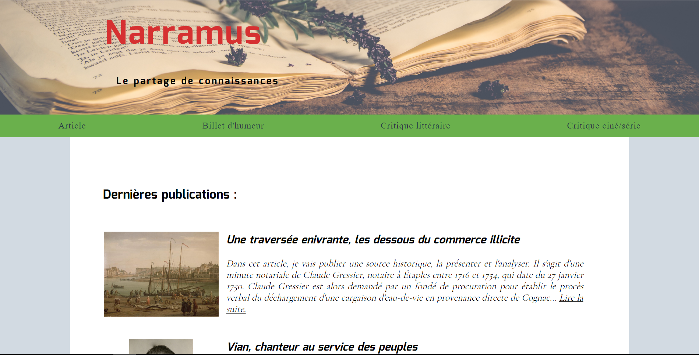
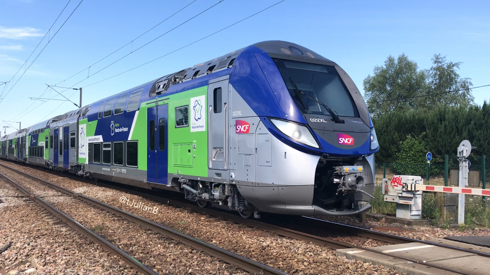

Site personnel de publications d'articles en sciences humaines, de billets d'humeur, mais aussi de critiques littéraires et cinématographiques.
2017
-
2018
Assistant d'Éducation, Collège François Mitterrand - Arras
2015
-
2016
Intervenant dans le cadre des Temps d’Activités Périscolaires - Lens
2015
Tutorat pour les L1 Histoire, Université d'Artois - Arras
2015
Manutentionnaire intérimaire, Scapartois - Tilloy-les-Mofflaines
2015
-
Téléopérateur, Université d’Artois - Arras
2013
-
2014
Emploi d’Avenir Professeur, Collège P. & M. Curie - Liévin
2013
Manoeuvre intérimaire, SADE - Sallaumines
2012
-
Hôte d’accueil, Stade Pierre Maurois - Lille Métropole
2012
Employé au service culturel - Avion

